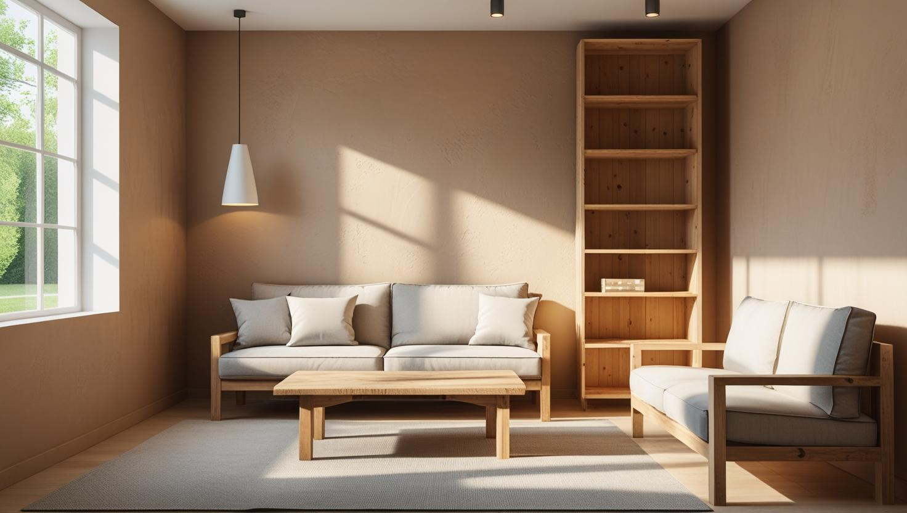
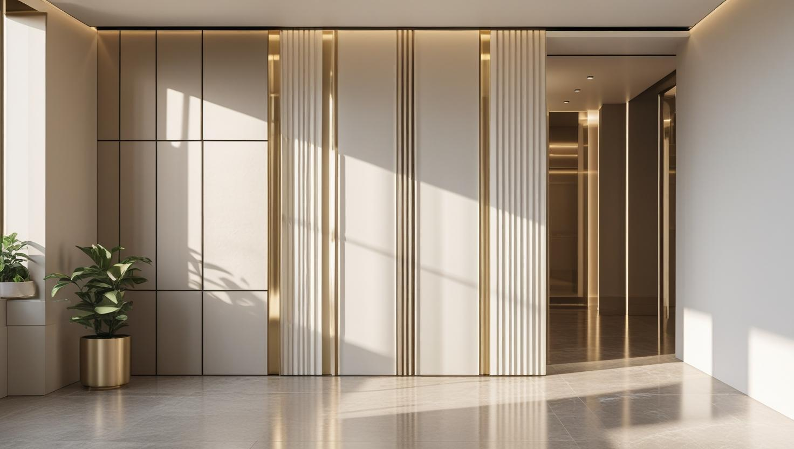

İstanbul Esenler Profesyonel Boya Ustası
20 yıllık tecrübemizle Esenler'de eski apartman dairesinden kentsel dönüşümle yenilenen konuta kadar iç ve dış cephe boya badana yapıyoruz. Davutpaşa'dan Oruçreis'e ücretsiz keşifle yüzeyi görüp yazılı teklif hazırlıyoruz.
Esenler'de Boya Badana: Apartman Daireleri ve Ortak Alanlar
Esenler boyacı talebinin ağırlığı apartman dairelerinde. İlçede çok katlı konut yoğunluğu yüksek; daire boyamanın yanı sıra merdiven boşluğu ve kat holü gibi ortak alan işleri de düzenli talep ediliyor.
Yapı stoğunun bir bölümü kentsel dönüşümle yenilenirken bir bölümü eski kalmaya devam ediyor. Yeni teslim dairede iş astar ve kat uygulamasına odaklanıyor; eski yapıda ise raspa, çatlak ve tavan kenarı onarımı devreye giriyor. Bu ikisi arasında süre ve işçilik farkı belirgin.
Esenler boya badana tekliflerini karşılaştırırken hazırlık kaleminin dâhil olup olmadığına bakmanız, aradaki farkı en hızlı gösteren şey oluyor.
Hizmetlerimiz

İç Mekan Boyama
Esenler'deki dairelerde iç cephe boyasına başlamadan önce dış duvara bakan odalarda nem ve küf izi olup olmadığına bakıyoruz. Leke varsa nedeni belirlenmeden üstü boyanmaz; kuru ve sağlam duvarlarda macun, astar ve boya katları planlanır.
- Dış duvar odalarında nem kontrolü
- Küf lekesinde temizlik ve astar
- Kiracı değişiminde boş daire boyası
- Tavan, kapı ve pervaz dahil plan

Dış Cephe Boyama
Esenler'de dış cephe boyasına karar vermeden önce binanın kentsel dönüşüm planında olup olmadığını netleştirmek gerekir. Uzun süre kullanılacak binalarda çatlak onarımı, astar ve dış cephe boyası birlikte planlanır; teklif kat maliklerine yazılı olarak sunulur.
- Dönüşüm takvimine göre kapsam
- Cephe çatlağında dolgu ve file
- Kolon ve kiriş hizasında nem kontrolü
- Yönetim toplantısı için kalemli teklif

Dekoratif Boyama
Dönüşümle yenilenen dairelerin düzgün alçı yüzeyleri dekoratif boya için elverişli bir zemin sunar; eski dairelerde ise uygulamadan önce duvarın düzgünlüğü kontrol edilir. Esenler'deki mağaza ve showroomlarda dekoratif uygulamayı müşterinin ilk gördüğü duvarda toplamak çoğu zaman yeterlidir.
- Düzgün alçı yüzeyde dekoratif doku
- Eski duvarda düzgünlük kontrolü
- Taş efektli dekoratif boya
- Kartonpiyerle uyumlu tavan rengi
Fiyat Tablosu
| Hizmet Türü | Metrekare Fiyatı | Ortalama Süre (100m²) | Garanti |
|---|---|---|---|
| İç Cephe Boyama | 100-200 TL | 2-3 Gün | Uygulama kapsamına göre |
| Dış Cephe Boyama | 180-280 TL | 3-5 Gün | Uygulama kapsamına göre |
| Dekoratif Boyama | 250-500 TL | 4-7 Gün | Uygulama kapsamına göre |
| Ofis Boyama | 150-250 TL | 2-4 Gün | Uygulama kapsamına göre |
Metrekare fiyatları yaklaşık ön değerlendirme aralığıdır. Uygulanacak ölçüm yöntemi, boyanacak alanın kapsamı, yüzey durumu, tamirat ihtiyacı, kat sayısı ve malzeme seçimi keşif sırasında netleştirilir.
Dış cephe boya fiyatları uygulama alanı için yaklaşık 180–280 TL/m² aralığındadır. Kesin hesaplama yöntemi ve teklif; yüzey durumu, bina yüksekliği, erişim veya iskele ihtiyacı, tamirat kapsamı, boya sistemi ve uygulanacak kat sayısına göre keşif sırasında netleştirilir.
Uygulama kapsamına göre işçilik garantisi sağlanır. Garanti kapsamı ve istisnaları teklif veya iş sözleşmesinde belirtilir.
Bu rakamlar İstanbul Boyacılık'ın 2026 gösterge fiyat aralığıdır. Bir piyasa ortalaması değildir. Kesin fiyat; yüzey durumu, hazırlık ve tamirat miktarı, uygulanacak kat sayısı, seçilen malzeme sınıfı, ulaşım ve kat koşulları ile evin eşyalı mı boş mu olduğu keşifte görüldükten sonra belirlenir.
Esenler'de aralığı belirleyen şey dairenin hangi yapı grubuna girdiği: yeni teslim dairede hazırlık az olduğu için iş aralığın altında kalabiliyor, eski yapıda raspa ve tamirat aralığı yukarı taşıyor.
Esenler'de Kentsel Dönüşüm Bekleyen Binada Boya Yaptırmalı mı?
Binanız için kentsel dönüşüm süreci başladıysa kapsamlı dış cephe ya da ortak alan boyasını erteleyip takvim netleşene kadar yalnız gerekli iç mekân işlerini yaptırmak çoğu durumda daha mantıklıdır.
Esenler'de dönüşüm uzun süredir gündemde: Atışalanı Mahallesi'ndeki gibi baştan planlanmış konut projelerinin yanında tek tek yenilenen apartmanlar da bulunuyor. Riskli yapı tespiti yapılmış ya da kat maliklerinin dönüşüm kararına yaklaştığı bir binada yeni dış cephe boyası, bina kısa süre sonra yıkılacaksa boşa gidebilir. İlk adım, apartman yönetiminizden sürecin hangi aşamada olduğunu öğrenmektir.
Takvim belirsizse dairede yaşamaya devam edeceğiniz süre için kabaran boya, rutubet lekesi ve çatlak gibi sorunlu yüzeylere odaklanan sınırlı bir iç cephe işi yeterli olabilir. Böyle bir işte mevcut tona yakın bir renk seçmek, kat sayısını ve maliyeti düşük tutar.
Zemin Kat ve Dış Duvara Bakan Odalarda Rutubet, Küf ve Yoğuşma
Eski apartman dairelerinde dış duvar köşelerinde ve zemin katlarda küf ile kabarma görülebilir; bu yüzeylerde boyadan önce nemin nereden geldiğini ayırmak gerekir, çünkü her nedenin çözümü farklıdır.
- Yoğuşma: Soğuk dış duvarda, özellikle kolon ve kiriş hizasında, evin içindeki nem su damlacığına dönüşür. Mutfak ve banyo buharının dışarı atılamadığı evlerde köşelerde siyah küf noktaları çıkar; havalandırma alışkanlığı değişmeden yalnız boyayla kalıcı sonuç alınmaz.
- Zemin nemi: Toprağa yakın zemin ve bodrum katlarda duvarın alt bölümünde kabarma ve beyaz tuzlanma görülebilir; su yalıtımı değerlendirilmeden yapılan boya kısa sürede dökülür.
- Sızıntı: Tavanda ya da duvarda sınırları belirgin, halka şeklinde bir leke çoğunlukla üst kattan veya tesisattan gelen bir kaçağa işaret eder; önce kaçak giderilir.
Esenler boyacı olarak keşifte lekenin yerine, kuruluğuna ve dağılımına bakıp hangisinin söz konusu olduğunu değerlendiriyoruz; kaynak çözüldükten sonra küf temizliği, astar ve boya sistemi uygulanır. Adım adım uygulamayı rutubetli ve küflü duvarlar için boya seçimi rehberimizde bulabilirsiniz.
Kiracı Değişiminde Esenler Boya Badana Ustasıyla Takvim ve Sorumluluk
Eski kiracının çıkışı ile yeni kiracının girişi arasındaki kısa aralıkta boya yapılacaksa, keşfi daire boşalmadan önce yapmak ve masrafı kimin karşılayacağını baştan netleştirmek zaman kazandırır.
Boş dairede eşya koruma gerekmediği için iş daha hızlı ilerler; ancak çıkan kiracının bıraktığı dübel delikleri, mobilya sürtmeleri ve bant izleri tamirat kalemini büyütebilir. Anahtar teslim tarihini bildirirseniz Esenler boya badana ustası olarak keşif ve uygulama günlerini buna göre öneriyoruz.
Boya masrafının kiracıya mı ev sahibine mi ait olduğu kira sözleşmesine ve evin teslim alındığı duruma göre değişir; normal kullanımdan doğan eskime ile hasar aynı şekilde değerlendirilmez. Konuyu kiralık evde boyayı kimin ödeyeceğini anlatan rehberimizde ayrıntılı ele aldık.
Kiralık dairelerde beyaz ya da kırık beyaz gibi nötr tonlar yeni kiracının eşyasıyla kolayca uyum sağlar ve sonraki rötuşları basitleştirir. Boya bittikten sonra odaların fotoğrafını çekmek de bir sonraki çıkışta dairenin durumunu karşılaştırmaya yardımcı olur.
Esenler’de Hizmet Verdiğimiz Mahalleler
Tekstilkent ve Giyimkent'in bulunduğu Oruçreis'ten Davutpaşa, Atışalanı ve Menderes'e kadar Esenler boya badana işleri için aşağıdaki mahallelerde keşif yapıyoruz:
Esenler Mahalleleri
- Esenler Atışalanı Mahallesi
- Esenler Birlik Mahallesi
- Esenler Çiftehavuzlar Mahallesi
- Esenler Davutpaşa Mahallesi
- Esenler Fatih Mahallesi
- Esenler Fevzi Çakmak Mahallesi
- Esenler Kemer Mahallesi
- Esenler 15 Temmuz Mahallesi
- Esenler Kazım Karabekir Mahallesi
- Esenler Menderes Mahallesi
- Esenler Mimarsinan Mahallesi
- Esenler Namık Kemal Mahallesi
- Esenler Nine Hatun Mahallesi
- Esenler Oruçreis Mahallesi
- Esenler Tuna Mahallesi
- Esenler Turgutreis Mahallesi
- Esenler Yavuz Selim Mahallesi
Esenler Boyacılık Müşteri Yorumları
"Esenler iç cephe boyama hizmeti aldık. Ustalar çok titiz çalıştı. Temiz ve zamanında teslimat yaptılar. Kesinlikle tavsiye ederim."
Ali Yekta Güven
Menderes / Esenler
"Boyacı ustası ararken Esenler İstanbul Boyacılık firmasını bulduk. Ofis boyama işimizi kaliteli bir şekilde tamamladılar."
Serenay Demiral
Tuna / Esenler
"Evimizi boyatmak için iletişime geçtik. Fiyat-performans açısından harika bir iş çıkardılar. Memnun kaldık."
Barış Kaan Tufan
Nine Hatun / Esenler
Faydalı Bağlantılar
Esenler boya badana planında fiyat hesabı, boya markası ve yakın ilçe seçeneklerini birlikte değerlendirmek için aşağıdaki rehberler kullanılabilir.
Esenler'de Boya Badana Yaptıracaklar İçin Sorular ve Cevaplar
Boya badana denince kireç badanası mı yapılıyor?
Günümüzde boya badana ifadesi çoğunlukla duvar ve tavanın su bazlı iç cephe boyasıyla yenilenmesi için kullanılıyor. Eski dairelerde tavanda kireç badanası kalmış olabilir; bu yüzey elle sürtüldüğünde tozuyorsa üzerine doğrudan plastik boya sürülmez. Önce gevşek katman temizlenir, ardından yüzeyi bağlayan bir astar uygulanır.
Küf çıkan duvara yalnız küf önleyici boya sürmek yeterli mi?
Yeterli olmaz. Küf önleyici boya yüzeyde yeniden küf oluşmasını geciktirir ama nemin kaynağını ortadan kaldırmaz. Önce küf temizlenip yüzey kurutulur; yoğuşma varsa havalandırma, sızıntı varsa kaçak onarımı gerekir. Kaynak çözüldükten sonra astar ve boya uygulanır.
Tekstilkent veya Giyimkent'teki mağazamızı boyatmak için işi durdurmamız gerekir mi?
Genellikle gerekmez. Mağaza bölümlere ayrılıp ürünler ve raflar örtülerek sırayla boyanabilir; kasa ve giriş gibi sürekli kullanılan alanlar için saat ayrıca planlanır. Yoğun satış saatlerini ve bulunduğunuz sitenin yönetim kurallarını keşifte paylaşmanız planlamayı kolaylaştırır.
Yeni teslim dairemde tekrar boya gerekir mi?
Müteahhit teslimi çoğu zaman tek kat ve ince bir uygulama oluyor; kapatıcılık ve renk beklentiyi karşılamayabiliyor. Ayrıca ilk yıl içinde ince oturma çatlakları çıkabiliyor. Bunları dolgu ile kapatıp doğru astarla boyamak kısa vadede tekrar iş yaptırmayı önlüyor.
Ortak alan boyamasında yüzey alanı nasıl ölçülüyor?
Merdiven boşluğunda duvar yüzeyi, kat holleri ve tavan ayrı ayrı ölçülüyor; korkuluk ve doğrama gibi kalemler varsa bunlar da ayrı yazılıyor. Teklifi kalem kalem verdiğimiz için yönetim toplantısında karşılaştırılabiliyor.
Eşyalı evde boyama sırasında eşyalar zarar görür mü?
Eşyalar oda düzenine göre toplanıp ortaya alınıyor ve örtülüyor; zemin, süpürgelik, priz ve kapı kenarları maskeleniyor. Eşyalı çalışma boş eve göre daha fazla hazırlık süresi istiyor, bunu planlamaya dâhil ediyoruz.
İletişim
İletişim Bilgileri
Telefon: 0507 832 29 12
E-posta: boyaustamistanbul@gmail.com
10+ Uzman Ustamızla Esenler ve çevresine hizmet veriyoruz.
Çalışma Saatleri: 7/24 (Pzt-Paz 00:00-23:59)